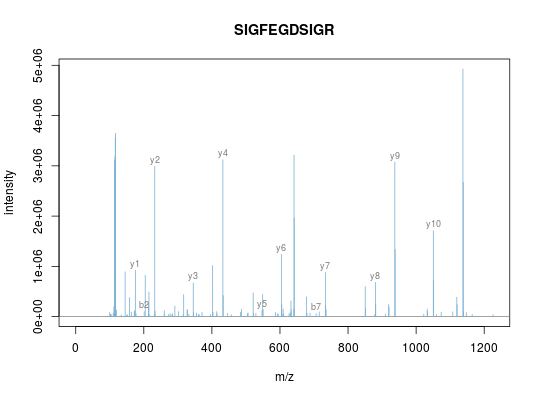

Plotting 'Spectrum' object(s)
These method plot mass spectra MZ values against the intensities. Full
spectra (using the full parameter) or specific peaks of
interest can be plotted using the reporters parameter. If
reporters are specified and full is set to 'TRUE', a
sub-figure of the reporter ions is inlaid inside the full spectrum.
If an "MSnExp" is provided as argument, all the
spectra are aligned vertically. Experiments can be subset to
extract spectra of interest using the [ operator or
extractPrecSpectra methods.
The methods make use the ggplot2 system. An object of class
'ggplot' is returned invisibly.
If a single "Spectrum2" and a "character"
representing a valid peptide sequence are passed as argument, the
expected fragement ions are calculated and matched/annotated on the
spectum plot.
Arguments
- x
- Objects of class
"Spectrum","Spectrum2"or"MSnExp"to be plotted. - y
- Missing,
"Spectrum"or"character". - reporters
- An object of class
"ReporterIons"that defines the peaks to be plotted. If not specified,fullmust be set to 'TRUE'. - full
- Logical indicating whether full spectrum (respectively
spectra) of only reporter ions of interest should be
plotted. Default is 'FALSE', in which case
reportersmust be defined. - centroided.
- Logical indicating if spectrum or spectra are in centroided mode, in which case peaks are plotted as histograms, rather than curves.
- plot
- Logical specifying whether plot should be printed to current device. Default is 'TRUE'.
- w1
- Width of sticks for full centroided spectra. Default is to use maximum MZ value divided by 500.
- w2
- Width of histogram bars for centroided reporter ions plots. Default is 0.01.
Methods
signature(x = "MSnExp", y = "missing", reporters = "ReporterIons", full = "logical", plot = "logical")- Plots
all the spectra in the
MSnExpobject vertically. One ofreportersmust be defined orfullset to 'TRUE'. In case ofMSnExpobjects, repoter ions are not inlaid whenfullis 'TRUE'. signature(x = "Spectrum", y = "missing", reporters = "ReporterIons", full = "logical", centroided. = "logical", plot = "logical", w1, w2)- Displays the MZs against intensities of
the
Spectrumobject as a line plot. At least one ofreportersbeing defined orfullset to 'TRUE' is required.reportersandfullare used only for"Spectrum2"objects. Full"Spectrum1"spectra are plotted by default. signature(x = "Spectrum2", y = "character", orientation = "numeric", add = "logical", col = "character", pch, xlab = "character", ylab = "character", xlim = "numeric", ylim = "numeric", tolerance = "numeric", relative = "logical", type = "character", modifications = "numeric", x = "numeric", fragments = "data.frame", fragments.cex = "numeric", ... )- Plots a single
MS2 spectrum and annotates the fragment ions based on the
matching between the peaks in
xand the fragment peaks calculated from the peptide sequencey. The default values areorientation=1,add=FALSE,col="#74ADD1",pch=NA,xlab="m/z",ylab="intensity",ylim=c(0, 1),tolerance=0.1, relative=FALSE, type=c("b", "y"),modifications=c(C=160.030649),z=1, fragments=MSnbase:::calculateFragments_Spectrum2andfragments.cex=0.75. Additional arguments...are passed toplot.default.
See also
calculateFragments to calculate ions produced by
fragmentation and plot.Spectrum.Spectrum to plot and
compare 2 spectra and their shared peaks.
Examples
data(itraqdata) ## plotting experiments plot(itraqdata[1:2], reporters = iTRAQ4)plot(itraqdata[1:2], full = TRUE)## plotting spectra plot(itraqdata[[1]],reporters = iTRAQ4, full = TRUE)itraqdata2 <- pickPeaks(itraqdata) i <- 14 s <- as.character(fData(itraqdata2)[i, "PeptideSequence"]) plot(itraqdata2[[i]], s, main = s)